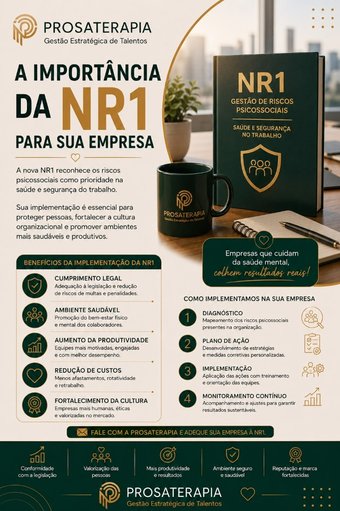

A nova NR-1 exige que as empresas identifiquem, avaliem e gerenciem os riscos psicossociais no ambiente corporativo.
Mapeamos fatores que impactam a saúde mental (burnout, estresse crônico) e o bem-estar das equipes.
Análise aprofundada de dados para apresentar diagnósticos claros, personalizados e assertivos.
Desenvolvemos medidas preventivas para eliminar estressores de carga de trabalho e falta de suporte.
Monitoramos o andamento de indicadores de segurança psicológica e adequação legal de longo prazo.

A presença de gritos, sarcasmo, agressão verbal e tensões no ambiente de trabalho afeta diretamente os resultados corporativos.
A estruturação de diretrizes éticas claras serve como escudo jurídico e guia comportamental para toda a organização.